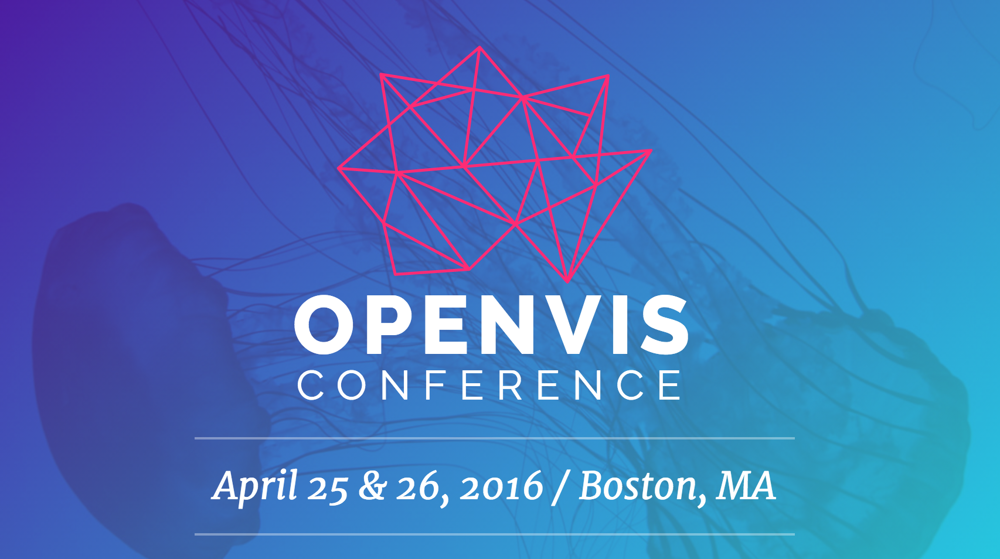

Highlights
Chris Kwan - June 2, 2016
Themes
- Machine Learning
- Presenting and Interpreting Information
- D3, SVG, and Friends
- Check Out This Cool Stuff I Made!
Machine Learning
"Seeing Machines Think"
Martin Wattenberg and Fernanda Viégas
Machine Learning / Check Out This Cool Stuff I Made!
A Return to Machine Learning
Kyle McDonald
Presenting and Interpreting Information / Machine Learning
Animation, Pacing, and Exposition
Tony Hang Shing Chu
D3, SVG, and Friends
Reactive Building Blocks: Interactive Visualizations with Vega
Arvind Satyanarayan
D3, SVG, and Friends
SVG Beyond Mere Shapes
Nadieh Bremer
Check Out This Cool Stuff I Made!
Designing Virtual Reality Data Visualizations
Ana Asnes Becker
Other Talks I Especially Liked
- Everything is Seasonal - Zan Armstrong
- Tiny Tools - Adam Pearce
- The Charting Monster that Spawned from the Jaws of Defeat - David Yanofsky
- Drawing on <canvas> - how computers read pixels - Mariko Kosaka
- Designing for Realtime Spacecraft Operations - Rachel Binx